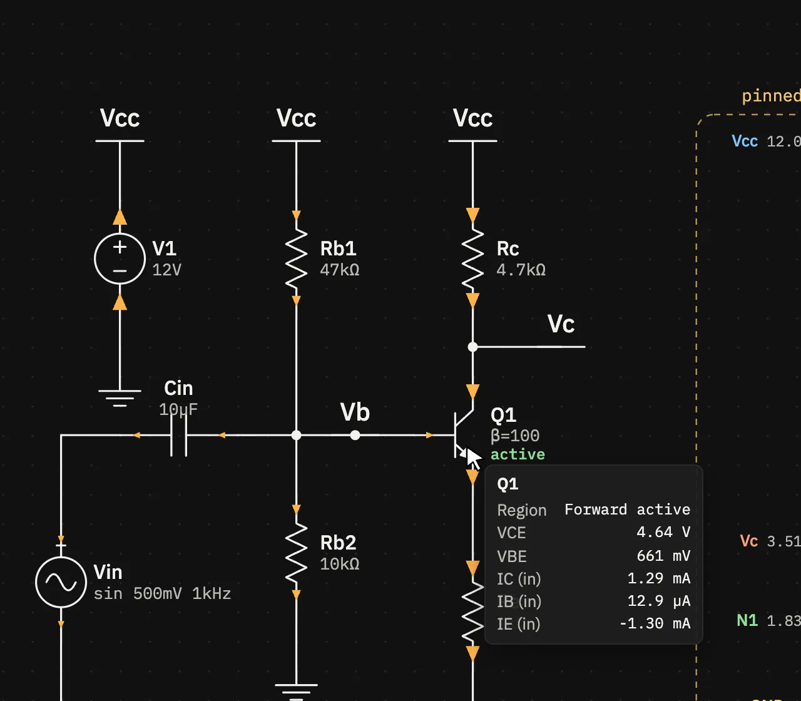
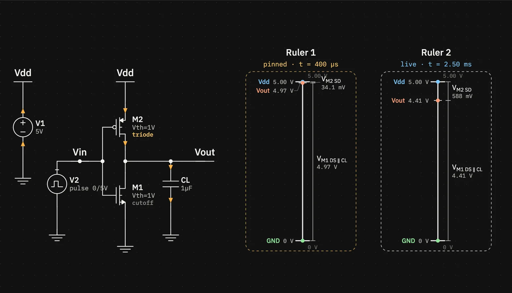
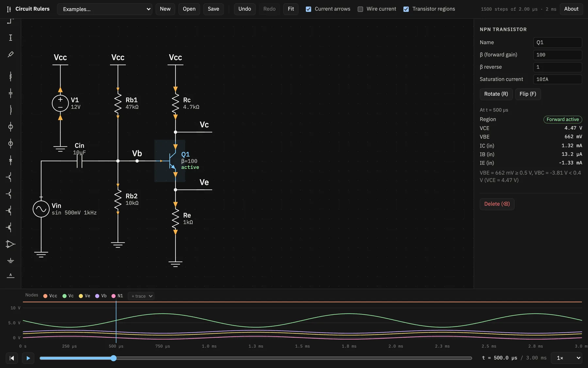

Features
Currents and regions
Rulers show voltages. These overlays show where the current flows and what each transistor is doing, at the current time. Turn each one on or off in the top bar.
Current arrows
With Current arrows on (the default), orange arrowheads on each part's leads point in the direction of conventional current. Their size follows the current's magnitude, scaled to the largest current in the run, so a lead with almost no current gets a tiny arrow.
Wire current
Wire current colours every wire segment by the current through it: silver for little, through amber, to red for the largest current anywhere in the run. The scale is square-root, so small currents still show. A legend in the canvas corner gives the full-scale value.

Tooltips and the inspector
Hover a part to see its voltages and currents at the current time. Select it to get the same numbers in the inspector under At t = …. Hovering a wire shows its node's name and voltage, and adds the node to the plot as a temporary trace.
- Two-pin parts show V across (+ pin minus − pin) and I (+ → −), the current flowing into the + pin and through the part. For a source delivering power this is negative.
- Transistors show the region, the pin-pair voltages (VCE, VBE or VDS, VGS) and the current into each pin, marked “(in)”. An emitter current is usually negative.
- Op-amps show V+− and the output current.
- Labels and grounds show their node's voltage.

Transistor operating regions
With Transistor regions on, each transistor carries a small label with its operating region. The colour gives the region's role. This lines the two device families up, even though their names clash: a MOSFET in “saturation” is amplifying, like a BJT in forward active.
| Colour | Role | BJT | MOSFET |
|---|---|---|---|
| green | amplifying | forward active | saturation |
| amber | fully on (switch) | saturation | triode |
| grey | off | cutoff | cutoff |
| purple | backwards | reverse active | — |

How the region is decided
BJT. Each junction counts as forward biased above a fixed threshold, the usual textbook rule of thumb:
- base–emitter on when VBE ≥ 0.5 V,
- base–collector on when VBC ≥ 0.4 V.
| BE junction | BC junction | Region |
|---|---|---|
| on | off | Forward active |
| on | on | Saturation (VCE is then below about 0.3 V) |
| off | on | Reverse active |
| off | off | Cutoff |
For a PNP the same rules apply to VEB and VCB.
MOSFET. Compare VGS with the threshold Vth, then VDS with the overdrive VGS − Vth:
| Condition | Region |
|---|---|
| VGS ≤ Vth | Cutoff |
| VDS < VGS − Vth | Triode (linear) |
| VDS ≥ VGS − Vth | Saturation |
For a PMOS the same rules use VSG and VSD. If VDS goes negative, the drain and source swap roles, the voltages are measured from the lower terminal, and the explanation says so.
The inspector prints the rule that applied, with the actual numbers, for example
VBE = 662 mV ≥ 0.5 V, VBC = −3.81 V < 0.4 V.
